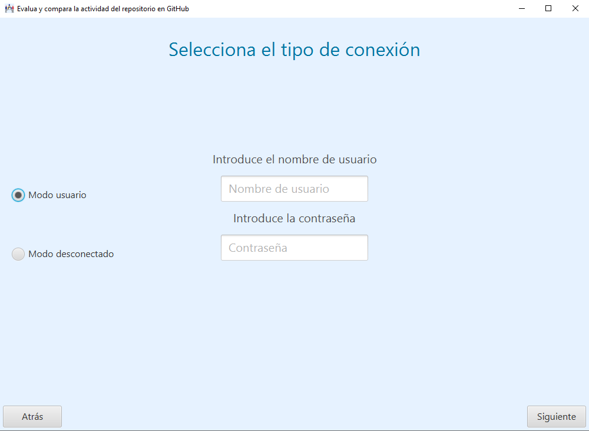

En esta apantalla aparecen dos campos de texto para introducir un usuario y su contraseña correspondiente, que se encuentre ya registrado en la plataforma seleccionada en la pantalla de inicio.
Aparece también dos botones:
- Conectar: autentifica el usuario introducido mediante la contraseña suministrada en la
plataforma seleccionada para trabajar.
- Atrás: vuelve a la pantalla anterior.
